sTIME is an ongoing project in which time and subjectivity are placed in contrast with the aid of custom software; the artificial time is "translated" into the user/performer's subjective time, subverting the standardized time system that governs contemporary society.
The project originated a few years ago when I heard the quote "Time is the intuition of ourselves and our inner space.", attributed to John Cage;
It arose in me the need to create a system by which it was possible to transform the time external to us, if you like, artificial (aTIME), into personal time, by bringing a person's interior time outwards, thus translating objective time into subjective time (sTIME).
For humans, the consciousness of time varies throughout life, not necessarily related to physics but undoubtedly evident to the senses. The school year days for a child seem very long compared to a year of life for an adult. This personal relativity also becomes variable from person to person.
Therefore, each individual or group becomes an isolated system, with its clock unaffected by universal relativity. To measure this individual clock, which is not necessarily biological, but mental, I created sTIME.
The software's operation is quite simple:
For some, the time on their clock will run faster; for others slower; it will just keep showing us artificial time if it equals our personal time.
